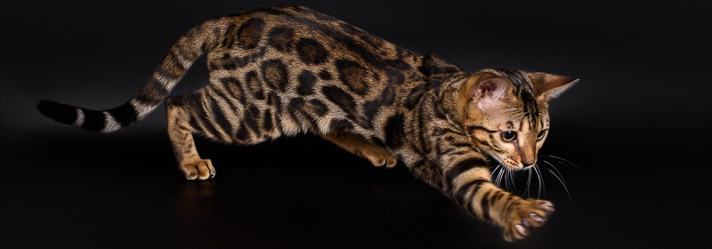
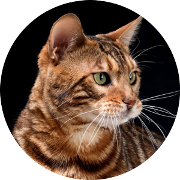
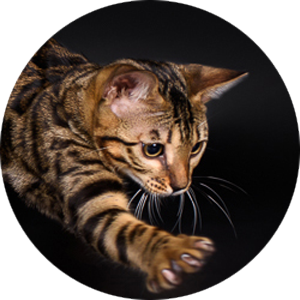
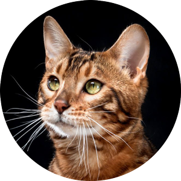
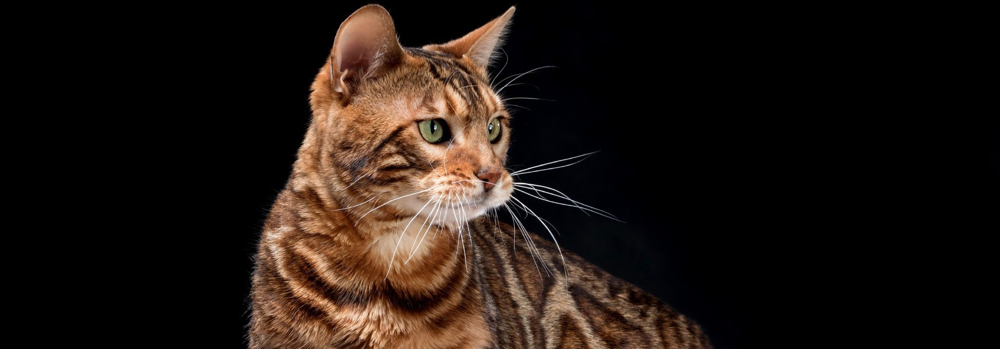

s
Cat

Бенгальськийкіт закличкою Пол
Призначений керівником відділу по роботі з клієнтами на залізничній станції Ліверпуль Саут Парквей в 
Чому я?
- На мою сторінку в Facebook підписалось вже більше 3 тис.
- Я знаю всі таємні ходи до їдальні тунелі станції.
- Моя енергія E = mC2.
- Моя швидкість V = 3*108.
Мій кар’єрний шлях
-  Завів будинок і люблячих господарів.
-  Почав відвідувати станцію ще будучи маленьким кошеням.
- Продовжую працювати вже 10 років.

Мої рекомендації
Ми раді вітати Пола на чолі відділу по роботі з клієнтами, адже він цього заслуговує - він дуже вихований кіт і все дуже люблять його.
Алан Роу
- Дружелюбний
- Винахідливий
- Везунчик
- Спритний
© Пол, 2019
Контактів не залишаю, я сам вас знайду.